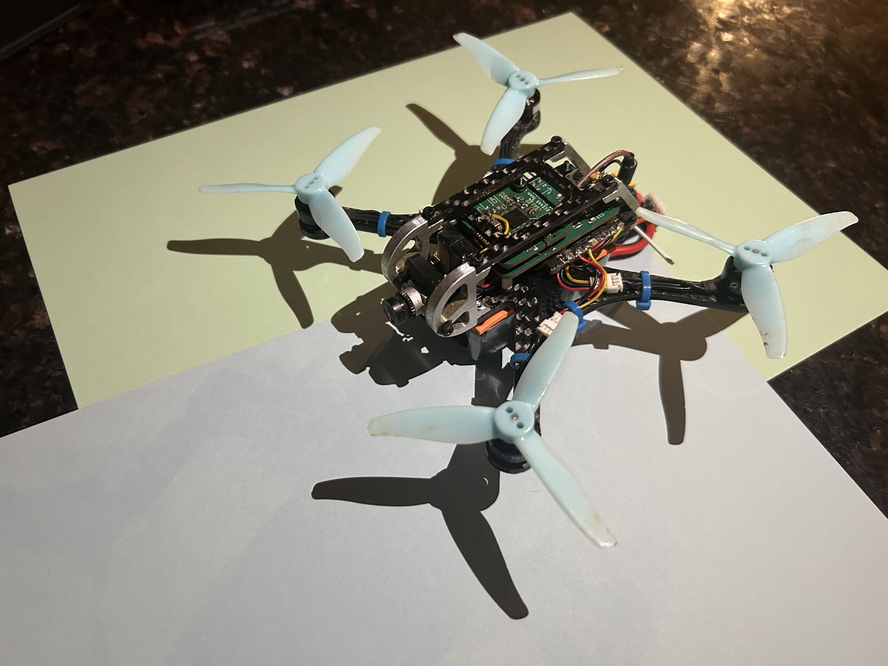
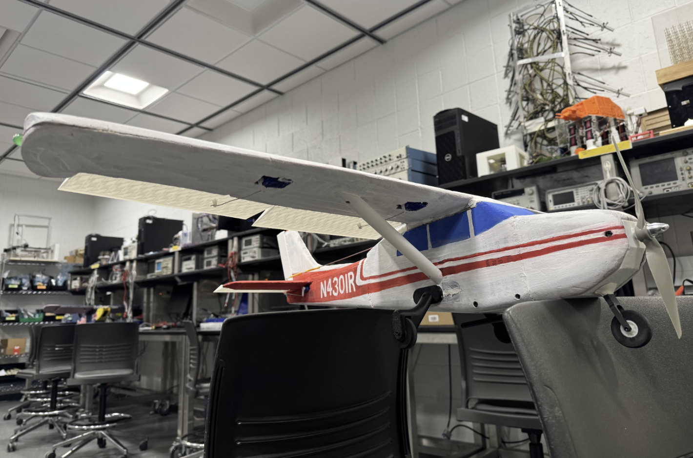

Electrical and Computer Engineering at UIUC
I recently graduated from the University of Illinois Urbana-Champaign with a B.S. in Computer Engineering and am pursuing an M.Eng in Electrical & Computer Engineering. My interests include embedded systems, firmware development, RF communication, control systems, and PCB design. I enjoy building complete hardware/software systems, from custom circuit boards and microcontroller firmware to testing tools and user interfaces.

Custom FPV drone system controlled via wearable IMU-based “bird suit,” integrating embedded flight control, RF communication, and full hardware design.
STM32 • Embedded C • IMU Sensor Fusion • RF Systems • PCB Design • Control Systems

Scratch-built traditional RC plane system with custom flight controller and traditional radio transmitter.
STM32 • Embedded C • RF Systems • PCB Design
Summer 2025
Summer 2024
2025–Present
University of Illinois Urbana-Champaign
M.Eng Electrical & Computer Engineering (2027)
University of Illinois Urbana-Champaign
B.S. Computer Engineering (2026), GPA 3.73
Dean’s List | James Scholar
Coursework: Control Systems, Robotics, Digital Signal Processing, Electric Machinery, Computer Systems, Semiconductors, Artificial Inteligence, Computer Graphics
Embedded: STM32, SPI, I2C, UART, CAN bus,
Programming: C, C++, Python, JavaScript
Hardware: KiCAD (PCB design), Ngspice (SPICE simulation), RF systems, RISC-V, SystemVerilog, Vivado/Vitis
Tools: CANalyzer, MATLAB/Simulink, Git, Linux
Robotics: ROS, sensor fusion, control systems
Engineer in Training (EIT) — Passed FE Exam (ECE), Jan 2026
FCC Amateur Radio Technician License — Passed Technician Exam April 2026